Balık, Öteki Deniz Ürünleri ve Balıkçılık
Türkler pek az balık yerlerdi. Türkler balık ya da diğer deniz ürünlerini pişirmeyi bilmezlerdi. İstanbul ’da Yahudilerin işlettiği özel bir balıkpazarı vardı. Müşterisinin çoğunluğunu Yahudiler ve Hıristiyanlar oluşturuyordu [DERNSCHWAM 125].
Belon, Türklerin ve Rumların balığı ete yeğlediklerini, sülün ve kekliğe pek yüz vermediklerini yazıyor. Bu yüzden İstanbul pazarlarında balık çok satılırken, av kuşuna az rastlanıyordu. Sultan ve çevresi bile eti av kuşlarına yeğliyordu [BELON 123b-124a].
İstanbul ’da bulunmuş birçokları gibi, Busbecq de büyük balık sürülerinin Karadeniz ’den Boğaz yoluyla Marmara Denizi ’ne, sonra Ege ve Akdeniz ’e ya da tam tersi yönde akmalarına hayret etmiş. Kimi kez balık sürüleri o denli yoğunlaşırmış ki elle yakalamak bile olasıymış. Kılıç balığı, çipura, karagöz, mercan türü balıklar, uskumru, tekir, kefal ve orkinos çok rastlanan ve avlanan balıklarmış. Balıkçıların çoğunluğunu Rumlar oluşturuyormuş, Türkler pis olmadığına inandıkları sürece balığı çokça yiyorlarmış [BUSBECQ 35].
Busbecq, Büyükada ’da üç ay kaldı. Ada halkının hemen hepsi Rum ’du. Busbecq, Rum bir ailenin yanında kolaylıkla yer buldu. Adaya kadar kendisiyle gelen, elçiliğin Türk görevlileri onun adadaki hareketlerini kısıtlamadılar. Bu nedenle istediği zaman uzun yürüyüşlere çıkabiliyor, öteki adalara gidebiliyordu. Zamanının büyük kısmında balık avlıyordu. Yerli denizcilerin de yardımıyla, serpme ya da dragnet (kelebek ağı gibi kepçe) ile çipura, mercan, karagöz, levrek, çarpanbalık, lapina, iskorpit ve kayabalığı tutuyordu. Şansının yaver gittiği bir gün Ali Paşa ’ya armağan olarak balık gönderdi. Kentteki kuşlara olan ilgisi gibi Busbecq balıkların yöresel adlarını ve yaşayışlarını araştırmaktan zevk duyuyordu. Çatal uçlu zıpkınla yengeç ve ıstakoz da yakalıyordu [BUSBECQ 186-187].
Belon ’un yazdığına göre Paris ’te çok makbul olan yunus balığı Türkler, Rumlar, Yahudiler ve Levantenlerce yenmezdi. Yahudiler havyar da yemezdi. Oysa Türkler ve Rumlar havyarı çok severdi. Çünkü Yahudilerin dini, pullu balıkların dışında her türlü deniz ürününün yenmesini yasaklamıştı. Ancak Yahudiler de bir başka balığın tuzlu kırmızı yumurtasını yerlerdi. Bu da çok lezzetli oluyordu. İstanbul ve Pera balık tüccarları salamuraya batırılmış uskumru bağırsağından garum denilen bir balık sosu hazırlarlardı. Bu sos eskiden de sevilirmiş. Türkler ve Rumlar bu sosu Batılı ulusların sirke kullandıkları gibi balık yemeklerine çeşni verecek bir sos olarak kullanırlardı [BELON 129b-130b].
Balık neslinin tükenmemesi için 1577 kararıyla ığrıpla balık avlanması yasaklanmıştı [AR 94]. Belon, Marmara Denizi ’nde balık avlamak için kurulan balık tuzaklarını yani dalyanları anlatıyor:
Sığ sularda, genellikle kıyılarda, deniz yatağına gemi direkleri gibi çok uzun kazıklar yerleştirilirmiş. Bu kazıkların üzerine enine tahtalar çakılır, böylelikle balıkçılar bu tahtalara rahatlıkla tırmanabilirmiş. Kazıkların tepesinde üstü kapalı oturaklar olur, bu oturaklardan balık sürüleri gözlenirmiş. Balıkçılar ikili çalışırmış. Her bir kazığın üstünde bir adam oturur, ellerinde ucu denizin içinde kaybolan bir halat tutarlarmış. Bu halatlara balık ağları bağlı olurmuş. Balıkçılar balık sürüsünü gördüğünde her biri halatı çekermiş. Bu halatlar büyük bir incelikle ağı çevreleyen öteki iplere bağlı olduğundan halatlar çekilince balıklar ağın içinden çıkamazmış. Sonra adamlardan biri sandala inip ağı boşaltır, yeniden denize bırakır ve daha sonra da kazığın üstündeki gözetleme yerine çıkarmış. Bu yöntemle balıkçılar çok çeşitli balık yakalarmış: uskumru, tekir, kefal, levrek, baraküda, yunus, torik, kikla, çipura, karagöz, mercan gibi...
Marmara denizcileri, ağlar batmasın diye mantar değil çam ağacı kabukları kullanırlardı. Torba biçimindeki ağla, tarak ağıyla denizin dibini tarayarak balık tutarken ağ, bir tek kayığın arkasına değil yan yana giden iki kayığın arasına bağlanırdı. Kayalıksız bir bölge seçilir ve kıyıya doğru gidilirdi. Sığa gelince kürek çekilir ve ağı aynı anda kayıktakiler yukarı alırdı. Ahtapot yakalanmışsa, öldürmek için ahtapotların başını dişleri ile ısırırlardı, muranaları sopayla vurarak öldürürlerdi. Muranaların [müren] kendilerini ısırmasından korkarlardı. Vatozların ve tırpanaların kuyrukları, sokmasın diye hemen kesilirdi [BELON 123b-126a].
Halk, kepçe biçiminde ağları denize sallandırarak küçük boy ve su girintilerinde çamuka cinsi küçük balık avlayabiliyordu. Ağın ağzı tahta bir çerçeveyle açılmıştı. Buraya bir çıta bağlıydı. Çıta da tahta bir direğe bağlıydı. Bu tahta direk mil vazifesi görüyordu. Böylece küçük bir ipi çekerek ağ yukarı hareket ettirilebiliyordu. Halk bir başka yöntemle daha büyük balık avlıyordu. Küçük balıkların kaynadığı kayalıkların arasına üzerinde çengeller olan bir ip gerilir ve bu çengellere çamukalar takılırdı. Küçük balıkları izleyen yılan balıkları, köpek balıkları sonunda zokayı yutardı.
Kadırgalar ve gemiler ağsız asla denize açılmazdı. Hava durgun olur olmaz ya denizin dibini tarayacak biçimde ağ atarlar ya da denizin üstünde yüzen ağlarını atarlardı.
Karadeniz ’de, Boğaz ’da ve Marmara ’da balıkçılar gece lambalarla aydınlatılmış küçük kayıkları ile çifter çifter balığa çıkarlardı. Adamlardan biri kürek çeker, ötekiyse kayığın kıç tarafında elinde çatallı zıpkınıyla çömelir ve denizi gözlerdi. Denizin dibinde uyuyan bir balığı görür görmez yumruğunu sıkıp gevşeterek arkadaşına haber verirdi. Çünkü en küçük bir ses bile balığı uyandırırdı. Kürekleri çeken, kayığı balığın tam üstüne getirir getirmez diğeri beş ya da altı çatallı zıpkını balığa saplardı. Bu yöntem özellikle ahtapot ve kalamar avında iyi sonuç veriyordu ama her çeşit pullu balık avlamada da kullanılıyordu.
Gece avlanmasında izlenilen bir başka yöntem de iki ya da üç yüz yemli oltayla avlanmaktı. Bunlar akşamdan denize bırakılırdı. Batmamaları için sukabaklarına bağlanırdı. Sabah olduğunda balıkçılar oltaları toplarlardı [BELON 127a-129a].
Şarap, Öteki İçkiler ve Uyuşturucular
Meyhânelere giden erkekler ikiye ayrılır: kadın düşkünü genç erkekler ve ayyaşlar. Birincisi, arkadaşlarıyla meyhâneye gidip birkaç kadeh attıktan sonra evine döner; ikincisiyse, vaktini sabahtan akşama, akşamdan sabaha kadar meyhânede geçirir. Bunlar, cuma namazını kıldıktan sonra câmi dönüşü evlerindeki kadınlarla ya da erkek hizmetçileriyle yatar.
Bozacılar, mayalanmış ak darı ile hindistancevizinden yapılan koyu ve ekşi bir içki olan bozanın içildiği yerlerdir. Biraz alkollü olmasına karşın üzümden değil de tahıldan yapıldığı için içilmesi günah değildir. Bozacılara Tatarlar ve aşağı sınıftan kimseler gider. Bu kimselerle ilişki kurmak sakıncalıdır. Buralara sürekli olmamak koşuluyla arada bir gidilebilirse de, en iyisi ekşi boza yerine kişinin kendi evinde tatlı boza içmesidir.
Fazla şarap, sarhoşluk ve başağrısı yapar. Bazıları keyiflenmek için tütün, nargile ya da haşhaş çekerler. Bunların dozunu gitgide artırmak akılsızlığında bulunanlar bir süre sonra isteseler de bunları bırakamaz, bağımlı bir duruma girerler. Afyon ya da haşhaş çok zararlıdır. Bu zararlı maddeler, afyon sütü, kenevir, tatula, tarçın, karabiber, hindistancevizi tohumu vb. baharatlardan, şekerden ya da bu türden bir karışım olan dilberdudağından yapılıp fazla alındığında kullanana çok zarar verirler. Başka bağımlılar, gubari gibi toz ilâçlar alıp, kafayı bulur, düşler görürler. Bunlar, tüm gün boyunca işsiz güçsüz oturur; pislik ve tembellikten kaşınırlar. Bu maddelere bağımlı olanların karnı seyrek acıktığında tatlı yiyecekler isterler. Bunlar parasızsa, ağda denen tatlı bulamaç; orta sınıftan bir kimse ise, ballı şerbet; zengin bir kimse ise de çeşit çeşit şerbetler ya da tatlılardan, normal insanın bir haftada yiyeceği kadar miktarı bir oturuşta yiyip sonra da derin bir uykuya dalarlar. Uyuşturucu bağımlılarının, bağımlı oldukları zararlı maddeyi bulabilmek için yapmayacakları şey, hattâ birlikte yatmayacakları kimse yoktur.
Gelibolulu Mustafa Âli, bunları böylece yazıp ilâçların zararlı olduğunu savunur. Oysa kahve, şehveti ve uykuyu azalttığından ve idrar söktürdüğünden bunlar gibi zararlı değilse de, yine de çok miktarda içilmesi doğru değildir. Gelibolulu Mustafa Âli ’ye göre, dinimizde yasak olmasına karşın, en iyi içki, uyarıcı etkisi olan kırmızı şaraptır. Oysa, bu da çok içildiğinde insanı halsiz ve titrek bir duruma getirir, uyku verir, alıngan ve saldırgan yapar, düşlere sürükler. Bu yüzden dikkatli içilmelidir [ÂLİ 78-81; 187-193].
Busbecq, Muhammed ’in şarap içmeyi neden yasaklamış olduğunu merak edermiş. Kendisine yapılan açıklamalardan birine göre bir gün Muhammed bir düğüne çağrılmış. Konukların neşesinden ve çevresindekilerin iyi dileklerinden etkilenmiş. Bu atmosferin şaraptan kaynaklandığını öğrendiğinde, şarabı dostluk havası yarattığı için kutsamış. Ancak ertesi gün aynı evin önünden geçerken korkunç bir kavgaya tanık olmuş. Yer kan gölü halindeymiş. Çevrede orası burası kesilmiş insanlar yatıyormuş. İçmeye devam eden konukların eğlencesi bir süre sonra sarhoş rezilliğine dönüşmüş ve parti kanlı bir kavgayla sonuçlanmış. Şarap içmenin böyle sonuçlanması sonucunda dehşete düşen Muhammed, şarabı lanetlemiş ve inananların şarap içmesini yasaklamış.
Busbecq ’in yazdığına göre sarhoş edici maddelerin bulunmaması Sultan’ ın kampındaki askerlerin davranışlarının aşırıya kaçmamasını sağlıyordu. Kuşkusuz bunun bir nedeni de aşırı askerî disiplindi. Hiçbir suç, küçük de olsa cezasız bırakılamazdı. Bu cezalar rütbe indirimi, dayak, malının kamulaştırılması ya da ciddî suçlar için ölümdü. Dayak en yaygın ceza biçimiydi. Bu ceza Yeniçerilere bile verilirdi. Ancak ölüm cezasıyla cezalandırılmazlardı. Ağır suçlar karşısında Yeniçeriler ya ordudan atılıyordu ya da rütbeleri sökülüp sıradan asker derecesine indirilip uzak bir garnizona sürülüyorlardı. Bu cezalar öylesine onur kırıcıydı ki ölüm cezası yeğlenebilirdi. Çok ciddî bir suç karşısında ölüm cezası sürgünde gerçekleştiriliyordu [BUSBECQ 154-155].
Genellikle Türk subayları içki içen Hıristiyanları özellikle yabancıysa görmezden geliyorlardı. Yeniçeriler de içki içen Hıristiyanları hoşgörüyle karşılıyorlardı. Yeniçerilerin çoğu açıkça şarap içiyordu. Hem Sultan onları tuttuğu, hem de Sultan’ın koruyuculuğunu yaptıkları için istedikleri gibi eğlenebiliyorlardı. Ancak aylıkları çok azdı, bu yüzden de içkiye çok az para ayırabiliyorlardı [DERNSCHWAM 84, 135].
Pedro, şarap konusunda da etraflı bilgi vererek, Türklerin şarap içmemekle birlikte meyhâne işlettiklerini, ancak Hıristiyanlarla Yahudilerin meyhânelerinin çok daha iyi olduğundan söz eder. Meyhânelerde müşteriye şarap verilmeden önce “Beyaz mı, Kırmızı mı?”, “Kandiya mı, Gelibolu mu?”, “Kaç yıllık?” gibi şarapla ilgili birçok soru sorulur. Dört yıldan yaşlı Misket şarabı (muscatel) ile biraz daha üstün kaliteli Malvasia ’nın bir galonu 4 escudo, bir iki yıllık aynı kalite şarabın ise galonu üç akçe idi. Pedro, bunların San Martin şarabından çok daha iyi olduğunu, en iyi şarabın ise, Rumların topico dediği (“yerli” anlamına gelen) rengi açık, tadı sert bir şarap olduğunu; İspanyol şarabı toro ’yu andıran bu şarabın bir galonunun iki akçe ettiğini söyler. Midilli ile Sakız adalarından gelen şarabın galonu bir buçuk akçedir. Galonu yalnızca yedi maravedi olan, Marmara Adası, Eğriboz, Trabzon ’dan gelen şarap en ucuz şarap olduğu için tutsaklarla, köleler bile bunu içebilir [VIAJE 265-66].
Türkler şarap ticaretiyle kesinlikle uğraşmıyorlardı. Tüm ithalat ve ticaret Yahudilerin ve Rumların elindeydi. Dernschwam, en iyi şarabı Yahudilerin sattığını yazıyor. Rumları ise şaraba su kattıkları için suçluyor. Yazdığına göre en iyi şarap adalardan, özellikle Midilli ’den geliyordu. Bu tür şarap tatlı, alkol derecesi yüksek ve kaliteliydi. Girit ’ten gelenler de iyiydi. Malvasia şarabının kilesi 3 akçeydi, Misket üzümünden yapılanı 4-5 akçe arasında değişiyordu. Bunun da en iyisi hafif sarıya çalan, beyaz üzümden yapılanıydı. Çok lezzetliydi ama nadir olarak bulunurdu ve kilesi 6 akçeye çıkardı [DERNSCHWAM 47, 102].
Avrupalıların tersine Türklerin içki bardakları hoş değildi. Hanımları ya da yardımcılarıyla oturup içmezlerdi. Bunun nedeni belki de gündelikleri 3 ya da 5 akçeyi geçmediğindendi. Yerli Rumlar ve az para alan Hıristiyan ve Yahudi hizmetkârlarının ve hanımlarının içki içmelerine izin vermezlerdi. Bunun nedeni erdem değil, yoksulluktu [DERNSCHWAM 104, 135].
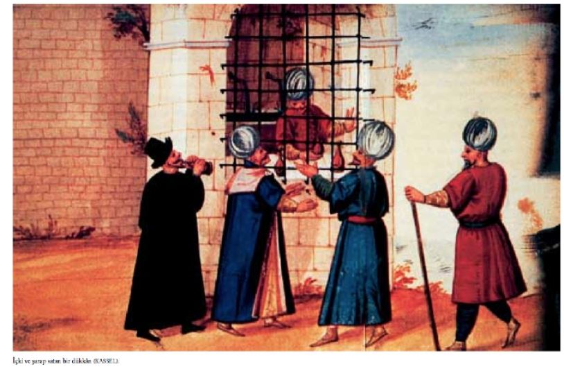
Kentin Türklerin oturduğu bölümünde şarap satan dükkânlar ya da meyhâneler yoktu. Tüm meyhâneciler Yahudi, Rum ya da Ermeni ’ydi. Bunlar yalnızca kötü kırmızı şarap verirdi. İyi şarap yoktu. Dernschwam ’ın yazdığına göre bu şaraplar bulanık ve koyu kırmızıydı. Döküldüğünde kumaştan lekesini çıkarmaya olanak yoktu, çünkü meyhâneciler bu şarabı mürver ağacının meyvesine benzer, küçük kırmızı vişne suyuyla sulandırıyorlardı. Kentin yerlileri şaraba bal ya da şeker veya branay katmayı seviyorlardı. Türkler meyhânelere gizlice ve korkarak gelirlerdi; çünkü meyhânede yakalanmanın ya da sokakta sarhoş dolaşmanın cezası çok ağırdı. Ramazan ’da içki içmenin cezası çok daha büyüktü. Bir keresinde Rum meyhânelerinden birinde yakalanan üç genç Türk ’le dört genç kadın ve meyhâneci eşeklere ters bindirilerek ve eşeklerin kuyruklarını tutarak sokaklarda gezdirilmişti. Ayrıca kadınların elbiseleri çıkartılmış ve salıverilmeden önce çok kötü dövülmüşlerdi [DERNSCHWAM 85].
Moryson, Lübnan ’da ve İstanbul ’da yetiştirilen üzümün, Yunanistan ’da yetiştirilen ekşimiş ve mideyi yıpratan üzümden çok daha güzel olduğu kanısındadır. Ona göre en iyi şarap Palormo ’da yapılan İspanyol şarabını andıran, Kanarya şarabı kadar lezzetli, oysa Jerez şarabı kadar sert olmayan Anadolu ’nun beyaz şarabıdır.
Moryson, Osmanlı askerinin savaşa giderken şarap bulamazsa, afyon suyu içip galeyana geldiğini; Batı’da afyonun zararlı sayılmasına karşın, yoksul olsun, zengin olsun birçok Türk ’ün afyonun hiç de zararlı bulmadığını; uzun bir yolculukta afyon suyu verildiğini söyler [MORYSON 129].
Şarap yasaktı ama Türkler in çoğu çok şarap içerdi. Nicholay, Türkler in Fransız Elçiliği ’ne konuk olarak çağrılmayı istemelerinden şikâyet ediyor. Çünkü, elçilikte bol bol sunulan iyi şarabı parasız ve kana kana, tıka basa içebiliyorlardı [NICHOLAY 91b].
Ancak birçok Türk gizlice ve büyük miktarda içki içerdi. Erkekler içki meclisinde bir araya geldiklerinde, ceketlerinin altına gizledikleri içki şişelerini çıkarırlardı. Sokakta içki şişesiyle göründüklerinde tutuklanabilirlerdi. Bir keresinde, elçilik hizmetkârlarından biri elçiliğe tahta bir kap içinde şarap getirirken bekçiye yakalanır ve elindeki şaraptan olur [DERNSCHWAM 96].
Dernschwam ’a göre Türklerin içki içmelerinin yasak olması onların yararınaydı. Çünkü içtiklerinde çok içiyor ve daha fazla satın almak için gömleklerini bile satıyorlardı. İçki içmek serbest olmuş olsaydı Türkler dünyanın en kötü sarhoş ulusu olurdu [DERNSCHWAM 104].
Üzüm hasadından sonra ürünler, altında tahta çıtalar olan uzun, derin teknelere konurdu. Bir sıra üzüm, bir sıra kireç ya da kireçli toprak döşenir sonra tahammüre bırakılırdı.
Alttan akan saf şarap âşar vergisi olarak Sultan’a verilir, kalan da şarabı yapanın olurdu. Kullanılan kireç şarabı korumaya, ona iyi bir renk vermeye yarardı. Bardakta berrak ve parlak olurdu. Ancak kireç aynı zamanda da şaraba garip ve hoş olmayan bir tat katardı. Bu tat uzun süre kalırdı ağızda. Hastalanmaya bile neden olurdu. Ama yine de çok kötü değildi. Ayrıca, çok da etkiliydi. Bu tür şarap elde etmeye adalarda da rastlanıyordu [DERNSCHWAM 102].
Dernschwam üzümleri iyi bulmasına karşın, üzüm bağlarının iyi bakılmadığı kanısındaydı. Üzüm yetiştirmenin değişik yolları vardı. Kimi yerde asmalar ağaçlara sarılıyordu. Toprağın düz olduğu yerlerde sırayla birbirlerinden ayrı ekiliyordu, aralarına köylüler girip toprağı sürüp başka şey ekebilsinler diye. Dağlık bölgelerde rasgele, aralıklı ekiliyor ve araları tırmıkla eşeleniyordu.
Türkler şarap imal etmiyorlardı. Sonbaharda üzümleri ya kış için depoluyor ya tatlı bir içecek elde etmek için kaynatıyor ya da üzüm suyuna bal ekleyerek şerbet yapıyorlardı. Kalitesiz şaraptan iyi sirke elde ediyorlardı. Rumlar ve Yahudiler geniş ölçüde şarap üretiyorlardı. Ancak presleri yetersizdi, şarabı saklamak için iyi fıçıları veya mahzenleri yoktu. Adalar’da çok fazla şarap elde edildiğinde Yahudi ve Rum tacirler bunu kentlere getiremezlerdi; çünkü yeterli sayıda boş fıçı bulamazlardı. Köylerde, şarap bodrumda değil, zemin katında saklanırdı. Fıçılar dik tutulurdu. Böylece istedikleri zaman sürahileri ya da maşrapalarını daldırıp fıçıdan şarap alırlardı. Dernschwam şarabın üstüne koruma amacıyla, yağ bile döküldüğünü görmüş. Anadolu ’da şarabı keçi derisinde saklarlarmış. Bu kötü depolama sonucunda şarap tadını ve kokusunu kaybeder ve sık sık da acılaşırmış [DERNSCHWAM 105-106; 103].
Busbecq, İstanbul ’da geçen yıllar süresince Sultan Süleyman ’ın dinsel görevlerini yerine getirmekte gittikçe daha titiz davrandığını gözlemiş. Daha önce gümüş kaplar kullanırken toprak kaplar kullanmaya başlamış. Daha önceleri oğlanlardan oluşan bir korodan şarkılar dinlemeyi çok severken, bundan da vazgeçmiş. Bunun günah olduğuna inanmış. Tüm müzik âletleri kırılıp yakılmış. Oysa bu âletler hem iyi zanaatkârların elinden çıkmış, hem de altın ve değerli taşlarla bezenmişler.
Bu sıralarda, Sultan İstanbul ’da şarap içimiyle çok ilgileniyordu. Muhammed ’in koyduğu kuralların aksine, Yahudilere ve Hıristiyanlara bile olsa kente şarap sokmak yasaktı. Yasaklama kararı Busbecq ve adamlarını rahatsız etmişti. Durumlarının belirsizliğinden dolayı sağlıkları bozulmuş olan Busbecq ve adamları yalnızca su içmek zorunda kalmalarından iyice umutsuzluğa düşmüşlerdi. Busbecq tercümanlarına bir an önce paşaların toplandığı Dîvân ’a başvurmalarını istemiş. Dîvân ’a elçilerin eski haklarının iadesini, kente istediklerini getirmelerinin yine serbest bırakılmasını istiyordu. Ancak tepkiler hemen geldi. Bu yabancılar niye suyla yetinmiyorlardı? Yabancıların evlerine şarap götürdüğünü gören halk ne düşünürdü? Hıristiyanların şaraplarıyla kenti kirletmelerine izin verilmeli miydi? Hattâ Müslümanların elçilikleri ziyaretten dönerken nefeslerinin yasak içki koktuğu gibi suçlamalar da vardı.
Ancak paşalar yabancıların istediklerini dikkate almışlar. Böyle bir yasaklama sonucunda yabancıların alışkanlıklarında böylesine köklü bir değişiklik olduğunda, üstelik hayatlarında da kısıtlamalar bulunduğu bir sırada çok büyük, hattâ öldürücü etkileri olabilirdi. Çok büyük bir şarap stoğunun bir gece limana gelmesine izin verildi. Atlar ve arabalar hazır bekliyordu. Bunlar, olabildiğince sessiz ve gizli bir biçimde elçiliğe taşındı.
Kent dışında, Rumlar Sultan ’a fikrini değiştirmesi için baskı yapmaya çalıştılar. Sultan’ın üzüm bağlarının çok olduğu bir bölgeden geçeceğini duyduklarında Rumlar bağları söküp asma yapraklarını arabalara doldurmaya, yollara yığmaya başladılar. Düşündükleri gibi oradan geçen Sultan bunun nedenini sordu. Artık şarap yapmada kullanamayacakları için yakacaklarını söylemişler. Ama Süleyman bağların bozulmasının durdurulmasını emretmiş, çünkü üzümlerin ya da sularının tüketilmesi yasaklanmamış. Yalnızca tahammür edilmesi yasaklanmıştı. Üstelik de üzüm Tanrı ’nın insana bahşettiği armağanların en güzeliydi. İnsanlar şarap yapamadıkları halde elma ağacı dikmiyorlar mıydı [BUSBECQ 180-182]?
Sonbaharda, yeni mevsimin meyveleri olmadan sıcak havalarda yemek üzere üzümleri saklamak için, Türkler önce çekilmiş hardal tohumu yayarlardı tahta ya da toprak bir kaba. Sonra bunun üzerine çok miktar da üzüm yaprağı ve yine çekilmiş hardal tohumu, tekrar bir sıra üzüm yaprağı. Bu işlem tüm kap doluncaya kadar yapılırdı. Sonra tahammür etmemiş, mümkün olabildiğince taze şarap dökülür ve kabın ağzı sıkıca kapatılırdı. Bir sonraki yılın en sıcak günlerine dek açılmazdı. Bu sıcak günlerde Türkler hem meyveyi yer, hem de meyve suyunu severek içerlerdi. Busbecq, hardalın tadını sevmediğini yazıyor. Ancak üzümler iyice yıkandığında hem yemesi hoşmuş, hem de susuzluğu gideriyormuş [BUSBECQ 54].
Türkler darının tahammürüyle elde ettikleri bozayı çok içerdi. Kimi buna bal, zengin olanlar da şeker karıştırırlardı. Söylendiğine göre bu içecek Polonya ya da Rusya ’dan getirilmişti. Bira da mayalanır ve balla sulandırılırdı [DERNSCHWAM 147].
Türkler ’in bir de Arap Şerbeti diye adlandırdıkları içecekleri vardı. Bunu yapmak için, tahta bir tekne içine dövülmüş kuru üzüm konurdu. Belli bir ölçüde sıcak su eklenir, tekne kapanır, iki gün tahammür olması için beklenirdi. Tahammür süreci çok yavaş olursa şarap tortusu eklenirdi. Tahammür ilk başladığında sıvı çok tatlı olurdu. Daha sonra asitleşir, üçüncü, dördüncü günlerdeyse, özellikle buzlu olduğunda, harikulade lezzetli olurdu. Ancak uzun süre saklanamazdı, çünkü çok çabuk ekşirdi. Ayrıca, son aşamada şarap gibi olurdu [BUSBECQ 53].
Şarap içmek Müslümanlıkta günah sayılmasına karşın, rakı bol bol içilirdi. Moryson, şarap içen Müslümanların sadece Yeniçeriler olmayıp din adamlarının da sık sık içtiğini söyler [MORYSON 129].
Şarap üzerine çok bilgi verilmiş. Rakıya ya hiç değinilmiyor ya da kısaca söz ediliyor. Örneğin, Pedro rakıyı Limni Adası bağlamında anıyor. Yine de Pedro, Türkler in yemekten önce birkaç kadeh rakı ve biraz da beyaz şarap içtiklerini yazıyor. Ev sahibi kendisine üşüdüğünde rakı ikram etmiş. Yunanlıların çok rakı içtiklerini anlatıyor; sofrada bir lokma yemek bir yudum rakı alırlarmış [VIAJE 152].
Dernschwam, Türkler arasında uyuşturucu madde kullanımının yaygın olduğunu gözlemlemiş. Bunun nedenini şarap içilmesinin yasak olmasına bağlıyor. Şarap içmek, en azından, açıkça yasaktı. Sarhoş olmanın cezası büyüktü. Ancak su onları neşelendiremediğinden uyuşturuculara başvuruyorlardı.
Neşelenmek ve çakırkeyif olmak için Türkler Maslak denilen kurutulmuş yabanî kenevir yapraklarından yapılan yeşil bir toz içerlerdi. Bu İstanbul ’da açıkça satılıyordu. Özellikle gürültücü ve kaba türden erkekler buna çok düşkündüler.
Afyon da İstanbul ’a Anadolu ’dan ve Arabistan ’dan geliyordu. Kentin her yerinde rahatlıkla bulunuyordu. Sıradan insanlar zihinlerini bulandıran, renklerini solduran ve alışkanlık yaratan afyon içiyordu. Dernschwam ’a söylendiğine göre çok afyon alıp da uykuya dalınırsa uyandırılmak için burnuna afyon serpmek gerekirdi.
Bir başka tür uyuşturucu da Tatula ya da Şeytan Otu’ydu. Bu mercimek büyüklüğünde, İspanyol biberine benzeye sarı bir tohumdu. Ne kadar alınırsa alınsın çok tehlikeli bir uyuşturucuydu. Eczacılardan alınırdı genellikle. Eczacılar ancak tanıdıklarına satarlardı. Ama kente Yahudi kaçakçılarca sokulurdu. Afyon ve tatula karışımı en tehlikeli olanıydı [DERNSCHWAM 52-53, 105].
İranlılar ve diğer Doğulular gibi Türkler de afyon içiyorlardı. Afyonun insana dertlerini unutturduğuna ve savaşta cesaret verdiğine inanılıyordu. Ancak, çok az afyon aldıktan sonra çoğu kendini kaybediyor ve sokaklarda olmadık şeyler yapıp oraya buraya tükürüyor ya da uluyorlardı. Bu durumdayken ellerine geçirdikleri Yahudileri ve Hıristiyanları dövüyorlardı. En tehlikeli ve kavgacıları Acemioğlanlar ve dönme Hıristiyanlardı [NICHOLAY 92a].
İçki sofrasında güzel sesli yakışıklı genç oğlanların varlığı normal olduğu kadar gereklidir de. Balık, yengeç, ıstakoz, karides, midye, istiridye gibi deniz ürünleri içkiyle en iyi giden mezelerdir. Yağlı yemekler, börek ve diğer hamur işleri gitmez. Sofrada et, pilâv, işkembe çorbası bulunabilir. İçkinin yanında balık yumurtası, havyar, isli balık ve etler, pastırma, bol kuru yemiş, çeşit çeşit fıstık, mevsim meyvelerinden bolca olmalıdır. Masada vazoların içinde başta gül olmak üzere, rengârenk çiçekler bulundurulmalıdır. İçkiyi fazla kaçırıp gereğinden fazla gevezelik ederek ya da uyuklayarak ev sahibine ve diğer konuklara rahatsızlık vermek çok ayıptır. İçki sohbetinde dikkatsizce sarf edilebilecek sözleri başkalarına aktarmamaları için hizmet edenlere de biraz içki vermek bazı durumlarda gerekebilir [ÂLİ 162-164]. Gelibolulu Mustafa Âli ’nin içki mezesi olarak salık verdiği deniz ürünleri üzerine dönemin şeyhülislâmı Ebussuud Efendi ’nin bir fetvası var. Burada Âli ’nin tam tersine Ebussuud Efendi ıstakoz, kerevit, midye, istiridye gibi deniz ürünlerinin mekrûh olduğunu, bir başka deyişle yenmemesinin iyi ve sevap olacağını hükme bağlıyor [EBUSSUUD 189].
Sıcak havalarda üst sınıftan Türkler içeceklerini buzlu severlerdi. Tüm yaza yetecek buzu sağlayabilmek amacıyla kışın kar yağdığında, kar toprakta açılan derin kuyulara depolanırdı. Burada kar donardı. Bu kar kuyularından bazıları Galata yakınlarındaydı. Kuyuların ağzında tahta kapaklar vardı. Yaz geldiğinde buz kalıplar haline getirilir, keçeye sarılır ve kente at üzerinde nakledilirdi. Atların her biri iki yanlarında birer buz kalıbı taşırdı. Bu işlem genellikle Bulgarlar ve Hıristiyanlarca gerçekleştirilirdi. Bunlar buzları meyve satıcılarına satarlardı. Buz oldukça pahalıydı. Bir ev, bir günde buz için yarım thaler öderdi. Bu fiyat konuk geldiğinde 2 thaler ’e çıkardı [SCHWEIGGER 116].
Pedro, sayısız kasap dükkânı kadar buz satan dükkânın da olduğunu yazıyor. Kar ve buz, dağlardaki Sultan’ a ait mağaralarda saklanırdı. Deniz yoluyla taşındığı ve çabuk eridiği için fiyatları düşüktü. Eylüle kadar; daha sonra da karla aynı fiyattan büyük buz parçaları satılıyordu. Bıçaklarla kesilen buz parçaları şerbete konurdu. Sultanın stokları bitene dek kimsenin buz veya kar satmasına izin verilmezdi. Bu da Sultan’a yılda 30.000 dükalık bir gelir sağlıyordu. Kimi yıllarda İstanbullular kendileri kar bulabiliyorlardı, kimi yıllarda da hiç kar yağmıyordu [VIAJE 272].
Saray ’da kullanılacak buzun Edirne ’den ya da Bursa ’dan getirtilmesi de yine Dîvân kararıyla saptanmıştı [AR 4-5].
Giyim-Kuşam
Kadın ve erkekler plisesiz, düz, yere kadar elbiseler giyerdi. Bu elbiseler bedenlerine sıkı sıkıya otururdu. Öylesine ki yürüdüklerinde bedenlerinin biçimi ve kadınların göğüsleri belli olurdu. Üst ve orta sınıftan olanların giysileri altın ve gümüş brokardan, satenden, damaskodan ya da ipektendi. Hanımların saçları ve kaşları siyahtı. Siyah değilse de siyaha boyar ve kaşlarını boyayla birleştirirlerdi. El ve ayak tırnaklarının uçlarına kına yakarlardı. Çocukların da ellerine, ayaklarına ve saçlarına kına yakılırdı. Hanımlar başlarına örtü örterler, üzerine öne doğru, 12-13 santim yüksekliğinde gümüş ve altın işlemeli şapka, bunun üzerine uzun bir örtü daha takarlardı. Bu eşarba, siyah ipek ve bütün yüzü kapayan bir peçe iliştirilirdi. Kimse onların yüzünü göremez, ancak onlar dışarıyı rahatça görürlerdi. Hanımlar kentte dolaşırken tüm bedenlerini beyaz bir örtüyle örterlerdi. Yakın arkadaşları bile onları beyaz çarşaf içindeyken tanıyamazlardı. Kadın ve erkekler maden ökçeli küçük çizme kullanırlardı. Çamaşır olarak, kadınlar pantolon biçiminde külot, renkli pamuklu ya da tafta kombinezon (iç gömleği) giyerlerdi. Bunlar sabunla yıkanırdı. Çamaşırları çok temiz yıkanır, kokular içinde saklanırdı [POSTEL 13-14].
Zaman zaman kadınlar sokağa çıkardı. Peçe takarlardı. Grup halinde ya birini ziyarete ya da hamama giderlerdi. Başlarına yuvarlak bir başlık takarlardı. Bu, ipekten ve altın süslemeliydi. Önünde küçük bir düğme olurdu. Bunun üstüne beyaz, iyi cins muslinden ya da basmadan beyaz bir eşarp bağlarlar, bu eşarpla sırtlarını da örterlerdi. Bu eşarbın ön yüzüne bir karış uzunluğunda ve genişliğinde, tüm yüzü örtecek biçimde, ancak görmeyi de önlemeyecek ince siyah ipek bir tül iliştirilirdi. Kadın giysisinin üstü erkeklerinkinin benzeriydi. Çok zarif ve şık, yakasız ve düğmesiz ceketler giyerlerdi. Bunlar bağcıklarla bağlanırdı. Yoksullarınki dışında bu ceketler ya ipekten ya da kadifeden olurdu. Ceketin altına kadınlar torba biçiminde bol, genellikle taftadan, pantolon giyerdi. Ayaklarında deriden, kırmızı, sarı, kahverengi ya da mavi, topukları çivili terlikler bulunurdu. Bu terliklerin ucu Avrupalılarınkine göre daha dardı ve kolaylıkla giyilip çıkarılabilirdi [DERNSCHWAM 147].
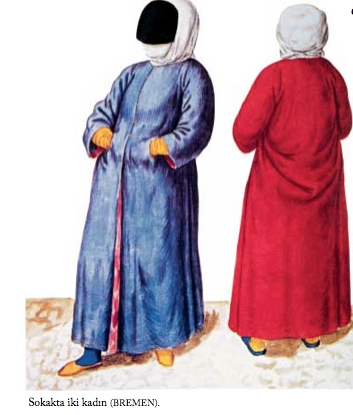
Kadınlar bol ve saydam ipekten ya da başka tür iyi cins bir kumaştan bol şalvar giyerlerdi. Bunun üzerine aynı incelikte iyi cins kırmızı, sarı ya da mavi bol bir elbise geçirirlerdi. Başlarına altın sikkelerle süslü ufak bir ipek şapka takarlardı. Saçlarını tek bir örgü hâlinde örer, bunu yine sikkelerle ve değerli taşlarla süslü bir fileyle toplarlardı. Nalınları boyalı tahtadan, kimi zaman da gümüş süslü olurdu. Bol elbisenin üzerine, üstlerine tam oturan ve dizlere kadar uzanan bir manto giyerlerdi. Bu manto işli ve ipekten olurdu. Siyah, ipek bir kurdele şapkayı çevrelerdi. Botları hafif, büyük ve boldu. Kısa manto üzerine bir de damasko ipeğinden uzun manto giyerlerdi. Küçük şapkanın üzerinde, üzerinden inciler sarkan altın bir rozet olurdu. Ayakkabılar düşük kalitedendi. Pahalıya mal olamazdı. Ancak paltoları pahalı İngiliz kumaşındandı. Ayrıca gerdanlık, küpe, altın ve değerli taşlı yüzükler gibi mücevherler takılırdı. Belden bir mendil sarkardı. Kadınlar yarı saydam bir peçe takarak yüzlerini saklarlardı. Dolayısıyla soyluların hanımları hep peçeli gezerdi. Arabaları kumaşla kaplı olduğundan gezintiye çıkan hanımları kimse göremezdi.
Erkeklerin giysileri de kadınlarınki gibi görkemli ve pahalıydı. Aşağı yukarı benzer şeyleri giyerlerdi. En önemli fark başlıklarındaydı. Çocuklara da ipek giysiler giydirilir, altın süslemeler takılırdı. Kıyafet sergilemesi Türklerin en büyük zevkiydi. Güzel giyinmek, bol ve iyi yemekten daha önemliydi [SCHWEIGGER 203-204].
Türkler, genellikle saçlarını kökünden tıraş eder, sadece başlarının en tepesinde bir tutam saç bırakırlardı. Önceleri iyice tıraş olup sadece bıyık bırakmalarına karşın, daha sonra ağızları çevresinde sakal bırakmaya başlamışlardı. Başlarına kırmızı çuhadan dar bir fes giyerler, bunun üzerine de, 10-15 metre uzunluğunda beyaz bir kumaşı, kendi dillerinde tülbent, İngilizce ’de türban denen yarım daire biçiminde sararlardı. Türbana küçük çemberler destek olurdu. Batı ’da giyilen herhangi bir şapkadan daha hafif olan bu kalın ama hafif sarık, başı hem güneş ışınlarından korur, hem de serin tutardı. Türkler, birini selâmlarken sarıklarını çıkartmaz, sadece başlarını eğip sol ellerini sağ göğüslerine koyarak selâm verirlerdi. Değişik sarık çeşitleri rütbeleri gösterir, bunlara bakarak giyenin rütbesi ve toplumdaki yeri saptanabilirdi [MORYSON 223].
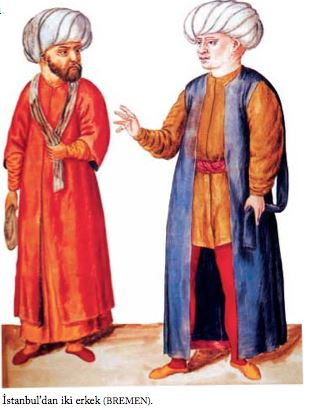
Ev dışında kadınlar kemersiz ince, yere kadar uzanan, arkadan, kalçalarından torba biçiminde dökülen ince elbiseler giyerlerdi. Bu elbise onları şişman ve çirkin gösterirdi. Kadın hizmetkârlar ve esirler yalnızca gözlerini açıkta bırakan, çarşaf gibi beyaz bir kumaşa sarınırlardı [DERNSCHWAM 132].
Osmanlılarda kadınların giysileri de erkeklerin giysilerine çok benzer. Onlar da giysilerinin altına incecik ketenden, ipekle iğne oyası işlenmiş uzun iç çamaşırı ve üzerinde dore veya gümüş işlemeli süsler bulunan pabuç veya fotin giyerlerdi. Bunlar da sadece dışarda giyilir; kadınlar evde yalınayak veya terlikle dolaşırlardı. Genellikle topuz yapılan saçlara, değerli taşlar, iğne oyasından yapılmış çiçekler, inci, sedef, altın, fildişi, kemik saç tokaları takılırdı. Moryson, Osmanlı İmparatorluğu topraklarında yaptığı gezi süresince nereye giderse gitsin hiçbir Türk kadınını evinin dışında başı açık görmediğini, hepsinin başını ve alnını en azından beyaz bir tülbentle örttüğünü, yüz, boyun ve ağız kısmının peçeyle saklandığını, ellerin bile çarşafın altında gizlendiğini, tüm kadınların sokağa çıkarken, ne kadar zengin olursa olsun, elbiselerinin üzerine tek tip koyu renk kumaştan yapılmış bir giysi giydiklerini, böylece hiçbirinin güzel mi çirkin mi, varlıklı mı yoksul mu olduğunun pek belirlenemediğini söyler [MORYSON 226-227].
Bellerine ipek ya da ketenden yapılmış geniş bir bağı iki üç kere dolarlar, bazen de altın veya gümüş tokalı ince deriden bir kemerle bellerini sıkarlardı. Pantolon yerine uzun yünlü bir entari giyerler, gömleklerini bunun üzerine çıkarırlardı.
İç çamaşırı olarak çok ince keten veya pamukludan yapılmış koyu bej rengi, ama tertemiz uzun don giyerler, çorapları için diz bağı kullanmazlardı. Giysiler, genellikle İngiltere veya Venedik ’ten gelen satenden veya jorjet gibi ince kumaşlardan, Şam ’dan gelen damaskodan yapılır, paltolar, İngiltere ’den getirtilen, dar giysilerde soğuğu, bol giysilerde de ısıyı geçirmediği için çok tutulan, siyah tavşan kürküyle astarlanırdı [MORYSON 225].
Yeşil renkten sonra en revaçta renk olan gök mavisi ipekten dar kollu uzun elbiseler giyen çeşitli tarikatlara mensup din adamları vardı. Bunların taktığı türban başkalarının türbanlarından daha geniş ve daha yassıydı. Bu din adamlarının en başta geleni, padişahın çok saydığı ve savaş sırasında birçok konuyu danıştığı “Müftü”ydü. Müftü den sonra en saygın kişi, İslâm kanunlarının uygulanmasından sorumlu olan “Kadı”ydı [MORYSON 225].
Müslümanlar, Hıristiyanlar tarafından çok giyildiği için, siyah rengi hiç sevmezlerdi [MORYSON 225].
Sivri uçlu erkek ayakkabıları bordo veya tahin renginde ince deriden yapılır, 2-3 santim yükseklikteki topuklarının altına küçük demirler çakılırdı. Erkekler ince deriden yapılmış fotin de giyerlerdi. Yalnızca sokakta giyilen pabuç veya fotinler eve girerken çıkartılır, evde terlikle ya da terliksiz dolaşılırdı [MORYSON 225].
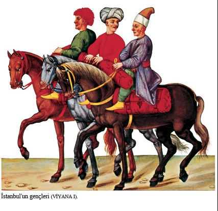
Moryson, Türk erkeklerinin genellikle hiç yüzük takmadıklarını; ancak, atlarını süslediklerini, bunların süslerinin hakikî taşlardan olmayıp değersiz taşların kullanıldığını söyler [MORYSON 226].
Pedro, Türkler in giyimiyle giydikleri kürk çeşitleri konusunda bilgi verir. Örneğin, zeplin (cebellinas) ile samur (martas), kuzu kürkünden daha çok giyilir. Hem çok çeşitli, hem de ucuz olduğundan, ister Hıristiyan, Yahudi, ister Türk olsun, herkes kışın kürk giyer. Bu arada zeplinin en iyisi 100-150 riyale, samuru andıran köstebek (turones) 7 riyale, tavşan, gri fare (rata) 4 riyale, erkek tilki 3 riyale, kuzu 2 riyale, erkek tilkiyi andıran çakal da yalnızca 1 dükaya alınabilir. Pedro, Türklerin, özellikle gezilerde zeplini andıran, 10 riyale satılan kurt kürkünü yeğlediklerini söyler [VIAJE 241].
İstanbul ’da Rumlar, İtalyanlar, Portekizliler, İspanyollar, Almanlar, Macarlar, Bohemyalılar, Polonyalılar gibi Müslüman olmayan çeşitli yabancılar kendi dillerini konuştukları gibi, ülkelerine özgü giysiler de giyerlerdi [DERNSCHWAM 114].
Müslümanlar ın Yahudilerle Rumlardan ayırt edilmesi için Yahudiler safran sarısı, Rumlar da lacivert başlık giymek zorundaydılar [VIAJE 243].
Rumlar, başka Hıristiyanlar ve yabancılar genellikle mavi-beyaz çizgili entari giyer, şase denen küçük bir takke takarlardı. Fynes Moryson da, böyle bir takkeye 15 meidin (1 meidin 3 akçe ediyordu) ödediğini söyler [MORYSON 224].
Türk kadınları gibi Ermeni kadınları da bol pantolon üzerine etek giyerler ama yüzlerine siyah bezden peçe yerine güzel, beyaz tül takarlardı [GERLACH 322].
Nicholay ’ın dediğine göre daha önce hiç Peralı Rum ya da Frenk kadını görmemiş olanlar onların gösterişli giysileri karşısında hayrete düşerlerdi. Kentli ya da tüccar hanımı kadınlar kadife pelerin, altın ya da gümüş düğmeli dantelli giysiler giyerlerdi. Hattâ parasal durumu çok iyi olmayan kadınların bile ipek ve taftadan giysileri vardı. Güzel ve pahalı giysilerin yanı sıra bir dolu altın zincir, bilezik, yüzük ve genellikle değerli taşlarla bezenmiş takıları taşırlardı. Kızlar ve yeni evliler kızıl saten şapka takar ya da başlarına 5 santim eninde ipek kumaştan altın süslemeli, inci ve yarı değerli taşlarla bezenmiş atkılar dolarlardı. Görkemli giyinmeye öylesine çok önem veriyorlardı ki kocaları pahalı isteklerini yerine getiremezse ihtiyaçlarını karşılayacak arkadaşlar bulurlardı. Bundan utanmazlardı. Ancak daha yaşlı kadınlar, aynı biçimde giyinseler de, daha ağır başlı davranırlardı. Dul kadınlar da keten kumaşlara sarınırlardı. Dul kadınlar da buna benzer keten kumaş kullanırlardı, ama onlarınki safranla sarıya boyanmış olurdu [NICHOLAY 66b].
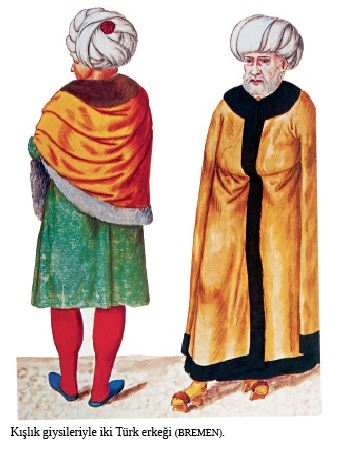
Pedro, kumaş ve terzi fiyatlarının İspanya ’dakilere kıyasla çok daha ucuz olduğundan, bir elbiselik kumaşın yirmi ile kırk düka arasında satılıp dikiş parasının bir dükayı aşmadığından, terzilerin bir elbiseyi en çok iki günde diktiğinden söz eder [VIAJE 239].
Aile İçi Yaşam
Osmanlılarda doğumdan ölüme kadar aile içinde çeşitli görenekler vardır. Bu döngünün önemli bir halkası evlenme ve düğündür. Önemi göz önünde bulundurularak bunlar ayrı bir bölümde ele alınacaktır.
Öteki uluslarla karşılaştırıldığında, Türkler hanımlarının namusuna çok önem verirlermiş. İnanılırdı ki bir kadın bir erkeğin isteklerinin uyanmasına neden olduğunda, göründüğünün farkında olmasa bile, erkeğin düşünceleriyle kirletilmiş olurdu. Bu nedenle, kadınların evlerinin dışına çıkmasına nadiren izin verilirdi. Böyle zamanlarda da kadınlar öylesine sarıp sarmalanırdı ki hiçbir yerleri hiçbir erkekçe görülemezdi. Busbecq ’e göre üst sınıflardan bir erkek evlendiğinde eşlerinin evlerinden asla çıkmayacağını, kadın ya da erkek konuk kabul etmeyeceğini, hattâ kadının yakın akrabalarının bile eve gelemeyeceğini şart koşuyorlardı. Analar, babalar kızlarını ancak dinî bayram günlerinde ziyaret edebilirlerdi. Kadın üst sınıftan ise, ya da büyük bir çeyiz getirmişse, erkek bir kadın alacağına ve hiç odalık almayacağına söz verebilirdi.
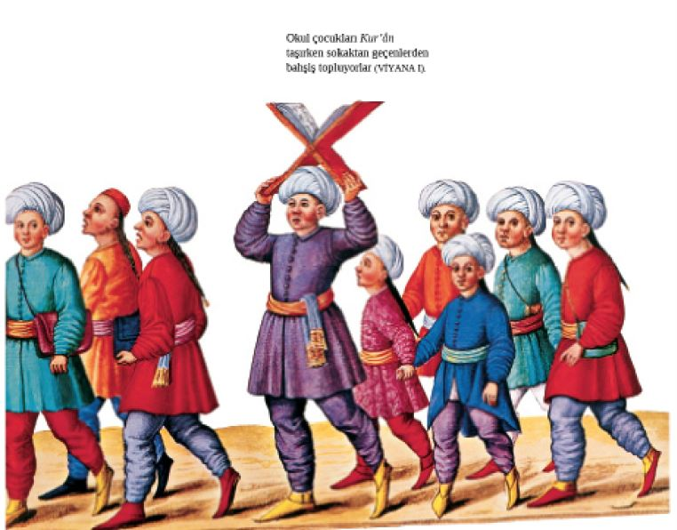
Bir odalığın efendisinden çocuğu olursa onun nikâhlı karısı olamazdı, ancak özgürlüğüne kavuşurdu. Nikâhlı hanım ile odalık arasındaki tek fark çeyiz sahibi olma ya da evlilikte mal üzerinde belli bir hakka sahip olma konusundaydı. Hiçbir esirin böyle bir hakkı yoktu. Bunlar kadına evde erkeğin eşi olma ve evdeki diğer kadınlar üzerinde söz sahibi olma hakkını sağlıyordu. Erkek gece kiminle yatacağını seçerdi. Arzularını karısına bildirirdi. Kadın ona seçtiği esiri yollardı. Ancak cuma geceleri evin hanımına aitti. Bu gece de ihmal edilirse, kadın o zaman şikâyet etme hakkına sahip olurdu [BUSBECQ 117-118].
Türk kadınları, Fransız kadınlarının tersine çocuklarını sütannelere vermez, kendileri emzirirmiş. Çocuklara kendi annelerinin bakmasının en iyisi olduğuna inanırlarmış. Sultan’ın saraylarını koruyan hadımağalarından kimisi çok iyi eğitim görmüştü. Genç prenslere ilk eğitimlerini bu hadımağaları verirdi. Daha ciddî eğitim görecek yaşa geldiklerinde, genç prensler yaşlı bir bilgine ya da hocaya teslim edilirdi. Bu yaşlı bilgin onlara Türkçe ve Arapça öğretirdi. Çünkü her iki dilde de basılmış öğretici kitap yoktu. Zor Arap alfabesi söküldüğü zaman öğrenciler kutsal Kur’ân ’ı, İslâm dininin yasalarını ve dualarını iyice öğrenip ezberlerdi. Postel ’in yazdığına göre kendi ulusunun Türklerden ve Yahudilerden öğreneceği çok şey vardı. Bunların başında, kutsal metinleri, dinlerinin temel ilkesini, tüm yaşamları boyunca unutamayacakları biçimde çocukların zihinlerine yerleştirmek geliyordu. Sonra, öğrenciler öteki konuları öğrenirlerdi. Ancak retorik ve tarihe çok önem verilmezdi, çünkü Türkler tarih kitaplarına pek yer vermezlerdi. Gerekçeleri ise tarih yazarlarının doğruyu yazmadıkları, hükümdarların yaşamı sırasında onları pohpohlamaktan başka bir şey yapmadıkları, hükümdarlar öldükten sonra da olayların unutulduğuydu. Retorikte hiçbir yarar görmüyorlardı. Türklere göre konuşma basit ve anlaşılır olmalı, birkaç sözcük içinde her şey ifade edilmeliydi [POSTEL 30-31; 34-35].
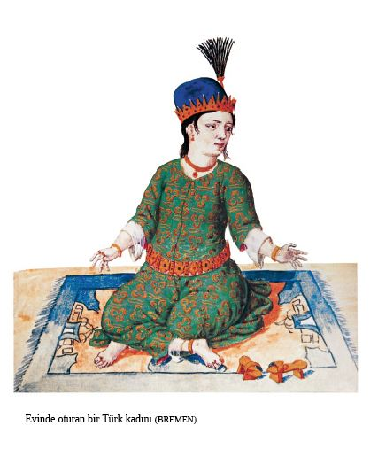
Orta ve üst sınıfa mensup ailelerin çocukları da benzer biçimde eğitilirlerdi. Ancak bu çocuklar ya hadım edilmiş ya da yıllar içinde yetkinliğini kanıtlamış ve gençleri ahlâken yıkıma uğratmayacağı kesin olan hocaların bulunduğu okullara gönderilirlerdi. Yoksul ailelerin çocukları Sultan’ ın Tanrı adına açtığı okullarda eğitim görebilirdi. Bu çocuklar bu okullarda her tür bilginin yanında iyilikseverliği de öğrenirlerdi. Kızlar kesinlikle evden dışarı çıkamazdı. Kızlar evlerinde dikiş dikmeyi, nakış işlemeyi ve kadınların bilmesi gereken işleri öğrenirlerdi [POSTEL 34-35].
Çocuklar sınıflarda sıralara değil, yerlere otururlardı. Bassano çocukların okurken neden başlarını salladıklarını sorduğunda, öğretmen Allah ’ın adı geçtikçe saygıdan başlarını salladıklarını söylemiş. Türkler, saygısızlık olmasın diye Allah ’ın adını herhangi bir kâğıt parçasına yazmazlardı. Böyle bir kâğıt parçası Kadı ’nın eline geçtiğinde, bunun Hıristiyan ya da Musevî tarafından yazıldığını bilen Kadı onu para ya da hapis cezasına çarptırırdı. Okula giden çocuklar (okulda Allah ’ın adı geçen bir şey okuyabilecekleri için), kız olsun oğlan olsun, iyice yıkanırlar ve okulda da kullanmak üzere yanlarına su alırlardı. Bassano ’ya göre, Türkçe ’nin karmaşık dilbilgisi kuralları yoktu. Bu nedenle çocuk okuma yazmayı öğrenir öğrenmez ailesi onu okuldan alırdı. Okuldan ayrılan çocuk arkadaşlarıyla sokaklarda yürür, arkadaşları onu öven şarkılar söylerdi. Böylece diğer erkek çocuklar da çabuk öğrenmeye teşvik edilirdi [BASSANO 37a-37b].
Sıradan insanlar bir tabaktan yerdi. Bu tabak alçak tahta bir sofra üzerine konurdu. Bu sofra aynı zamanda sandık olarak da kullanılırdı. Bunun üzerine madenî bir tepsi, onun üzerine de çevresine ince kösele şerit dikilmiş bir deri parçası konurdu. Bu, kese gibi de kullanılırdı [POSTEL 25].
Giysilerine düşkünlüklerinin tersine, Türkler in evlerinde yok denecek kadar az mobilya ve mutfak gereci vardı. Sandık yerine kırmızı deriden örtüsü olan sepet kullanıyorlardı. Karyola yerine alçak sedirlerde yatıyorlardı. Yatak örtüleri ipek ya da diğer pahalı kumaşlardandı. Bu örtüler yorgan gibi dikilir, altın ipliklerle işlenirdi. Yastık yüzleri de aynı biçimde işlemeli olurdu. Camlar Batı Avrupa ’da olduğu gibi kurşun çerçeveye oturmazdı. Bunlar mozaik düzenlemelerle bezenmiş sevimli alçı çerçevelere takılırdı [SCHWEIGGER 211].
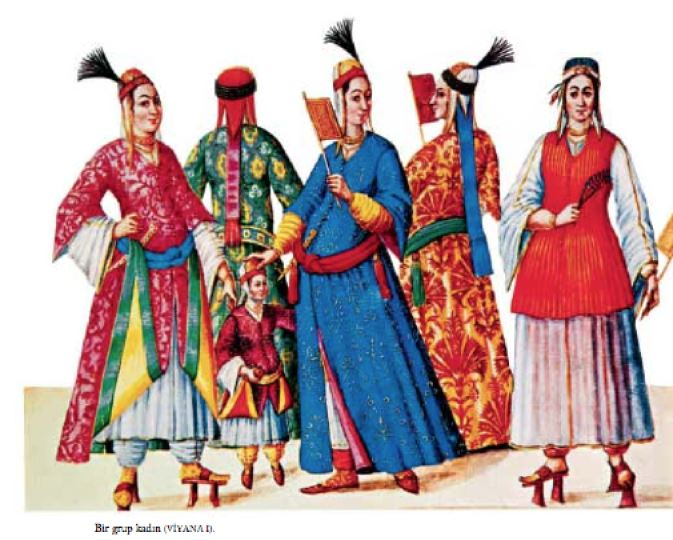
Türkler kuştüyü yatakta değil, pamuk ya da yün doldurulmuş şiltelerde yatarlardı. Bu şilteler, yere konulan tahtalar üzerine yerleştirilirdi. Sabahları ise hepsi yüklüğe kaldırılır, üstlerine de ince işli yastıklar konurdu. Kentlerde yalnız çok yoksulların yorganları kadife, brokar, saten veya taftadan değildi. Çarşaflar pamuktan dokunurdu. Alt sınıflarda çarşaflardan biri yorgana, öteki ise şiltenin üzerine konur, ayda bir ya da iki ayda bir değiştirilirdi [POSTEL 28]. Türkler kilim ya da şilte üzerinde, üzerlerine yorgan alarak uyurlardı [MORYSON 130].
Genellikle 14 ilâ 24-25 yaşları arasındaki Müslümanlar da Yahudiler gibi sünnet edilirdi. Sünnet daha küçük yaşlarda, Tanrı ’ya saygının bir göstergesi olarak bir adağın yerine getirilmesi için ya da çocuğun ölme tehlikesiyle karşı karşıya kalması halinde gerçekleşebilirdi. Kararlaştırılan günde, sünnet edilecek çocuk câmiye at sırtında ya da yürüyen bir kalabalığın eşliğinde götürülürdü. Câmide imâm çocuğa Müslüman olup olmadığını, Muhammed ’in Tanrı ’nın peygamberi olduğuna ve Muhammed ’in Tanrı ’nın kendisine gönderdiği âyetleri yazdığına inanıp inanmadığını sorar, daha sonra çocuk gerçek inancı koruyup gözeteceğine, inananların dostu, inanmayanların düşmanı olacağına yemin ederdi. Çocuk sünnet edildikten sonra, ailesi törene katılanların mevki ve zenginliğine göre üç güne kadar ağırlardı. Bir prensin sünneti hükümdarlık ailesi içindeki bir düğünden de görkemli olurdu. Her tür eğlenti düzenlendiği gibi turnuvalar da yapılırdı [POSTEL 41-42].
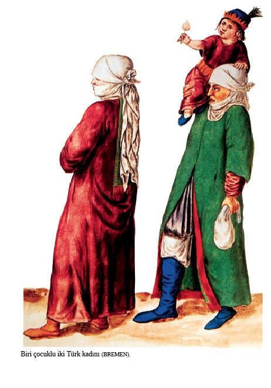
Yakında câmi olmadığı zaman, sünnet töreni evde gerçekleşirdi. Postel, aynı zamanda, sünnetin Yahudilerde olduğu gibi doğumdan sonraki sekizinci günde de yapıldığını duyduğunu yazıyor. Müslümanlar bu âdeti Yahudilerden almışlardı.
Zengin ya da zenginin kölesi olan bir Hıristiyan, Müslüman olduğunda câmiye tıpkı bir Müslüman ’ın götürüldüğü gibi götürülürmüş. Ancak, fakirse ya da Müslüman olmaya zorlanmış bir zavallıysa birinin ona kılavuzluk etmesi gerekirmiş. Kılavuz, Müslüman olacak olanın eline dik tutacağı bir ok verir ve câmiye kadar adam elinde okla yürürken kılavuz da “Yeni Müslüman ’a yol verin, selâmlayın!”, “Tanrı’ya şükrolsun!” diye bağırırmış. Gelip geçen birkaç akçe verirmiş. 300 akçe toplandığında sünnet gerçekleşir ve bu para daha sonra verilecek şölende kullanılırmış. Postel, kime sorarsa sorsun, okun kesin olarak neyi simgelediğini öğrenememiş. Kimi bunun tek bir Tanrı olduğunu, kimi ise dinini değiştirenin yeni inancını koruma arzusunu gösterdiğini söylemiş [POSTEL 42-43].
Türk erkek çocukları genellikle dört, beş ya da yedi yaşındayken sünnet edilirdi. Sünnet olacak çocuğa değerli taşlarla süslü bir giysi giydirilir ve en büyük sokaklarda gezdirilirdi. Bundan sonra aile konukları eğlenceye davet eder ve çocuğa armağanlar verilirdi. Operasyon sırasında din adamları dualar okur ve konuklar çocuğu onu eğlendirerek oyalamaya çalışırdı. Önemli bir kimsenin çocuğu sünnet edilirken büyük eğlenceler düzenlenir ve insanlar ellerinde meşalelerle müzik eşliğinde yürürler, şölenler verilirdi. Gerlach, böylesi bir olayı anlatırken bir düğündeki gibi kendisine hizmet edildiğini yazıyor. Ahmed Paşa ’nın iki oğlu 15 Kasım 1576 ’da sünnet edilirken Gerlach bu görkemli kutlamaları izlemiş [GERLACH 270, 410].
Türk çocukları önceleri oniki-onüç yaşında sünnet edilirken, salgın hastalık yüzünden pek çok çocuk ölünce sünnet daha erken bir yaşta yapılmaya başlandı. Sünnet günü gelince, çocuğu yüreklendirmek amacıyla, özel giysiler giydirilir ve at üstünde, davul zurna eşliğinde kentte dolaştırılırdı. Babalar çocuklarının sünnetini âdeta bir düğün olarak benimserlerdi. Dernschwam ’ın komşusu olan bir berberin oğlu sünnet olduğunda kadın erkek birlikte at sırtında düğün alayı yaparlar [DERNSCHWAM 139].
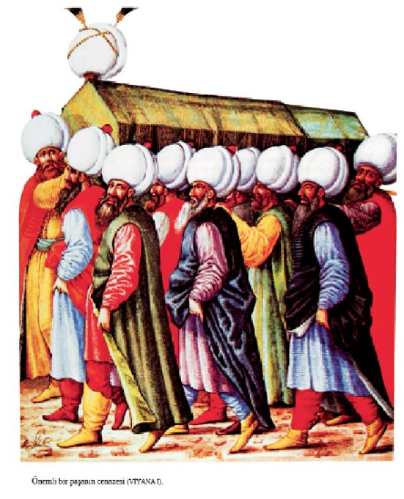
Türklerin tersine Yahudiler erkek çocuklarını doğumdan sonraki sekizinci günde sünnet ederlerdi. Türkler sünnet derisini hafifçe keserken, Yahudiler tüm sünnet derisini mümkün olduğunca arkaya çekiyorlardı. 12 Eylül 1577 ’de Gerlach bir Yahudi sünnet törenine tanık oldu. Yahudiler evin dışında ve içinde toplandılar. Operasyonun Tanrı ’nın isteği üzerine yapıldığını söylüyorlardı ve bebek ağlamaya başladığında haham bebeğe adını verdi. Tören sırasında çalınan Yahudi müziği Yunan müziğinden daha çok hoşuna gitmiş Gerlach ’ın [GERLACH 385].
Rum çocuklar iki ya da üç yaşına gelinceye kadar vaftiz edilmezlerdi. Tören sırasında, evde ya da kilisede, çocuklar mum taşırlardı ve üzerlerine su dökülürdü. Rum kızları genellikle 12 ya da 13 yaşında evlenirlerdi.
Bir kadın veya erkek öldüğünde Türk törelerine göre ölü ılık su ile yıkanır, beyaz bir kefene sarılır ve tahta bir tabuta konurdu. Akrabalar geceleyin sokakta “hu, hu, hu” diye bağıran ağlayıcılar tutarlardı. Tüm mezarlıklar kent dışındaydı. Mezarlıkların çevresinde duvar veya çit olmazdı. Cenaze törenlerine yalnızca erkekler katılırdı. İmâmlar tabutun önünde, cemaat ardında yürürdü. Yol uzun olduğundan, tabutu taşıyanlar, bir câmi ya da türbeye rastgelindiğinde tabutu yere bırakır ve ölünün ruhuna dua ederlerdi. Tabut yeşil ya da kırmızı çuhayla örtülür, bunun üzerine gümüş ve altın işlemeli mavi kumaşlar konurdu. Kabristanda dua edilir ve genellikle tabutun kapağı tabut mezara konmadan açılırdı. Bir mezara birden fazla ölü gömülmezdi. Daha sonraki günlerde kadınlar mezarı ziyaret ederler, ağıtlar söylerlerdi. Ölene, ona öyle iyi hizmet eden ve onu o denli çok seven karısını bırakıp gittiği için sitem edilir, hayatından hoşnut olmadığından mı dünyayı terk ettiği sorulurdu. Daha sonra mezara yumurta, peynir ve et bırakılırdı. Ne kadınlar ne de erkekler yas giysisi giyerdi. Ancak erkekler siyah, kahverengi, koyu eflatun gibi koyu renk bir cüppe giyerlerdi. Üst sınıftan bazı kişiler enli, siyah kurdele takarlardı. Her bir mezarın başına yaklaşık 50 cm. yüksekliğinde silindir biçiminde ya da kesilmemiş bir taş dikilirdi. Önemli insanlar bazen dikdörtgen biçiminde mermer mezarlara gömülürdü. Başucunda da bir insan boyunda, ucu sarık biçiminde bir taş dikilirdi. Bu sarık ölenin rütbesini, sınıfını belirlerdi. Kimi kez bu taşa Arapça Kur’ân ’dan âyetler kazınırdı. Bazen böyle bir taş yerine bir karış eninde, bir insan boyunda üzerine yine âyetler kazınmış plaka biçiminde bir taş dikilirdi. Hıristiyan mezar taşlarında sıkça rastlandığı gibi ölenin hayatta yaptıkları, armaları ya da insan portreleri asla mezar taşlarına geçirilmezdi. Büyük devlet adamları, paşalar ve benzer yüksek mevki sahipleri bazen ölmeden önce mezarlarını yaptırırdı. Bu türbeler câmi bahçesinde, mescitlerde olabildiği gibi büyük bahçeler içine kurulmuş, havuzlu ve yoksullara yemek veren imâretli görkemli câmilerde de olurdu [SCHWEIGGER 199-200].
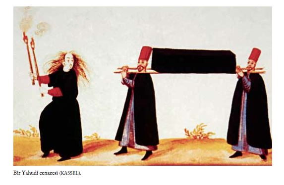
Gerlach ’ın tanık olduğu bir cenaze merasiminde dua eden bir imâm tabutun önünde yürüyordu. Kortej mezarlığa ulaştığında tabut bir taşın üzerine kondu ve orada olanların tümü Tanrı ’ya ölenin günahlarını affetmesi için dua ettiler. Dua, gömme işlemi bitene dek devam etti. Ertesi gün ölenin dul karısı mezara geldi ve tekrar tekrar kendisini neden terk ettiğini sordu. Aynı anda, dul kadınla gelen kadınlar da mezarın etrafını çevreleyip imâmla birlikte dua ettiler [GERLACH 249].
Genç bir Türk kızı ya da erkek çocuğu öldüğünde cenaze kortejinin başında iki erkek bir elma ağacı taşırdı. Arkalarında, altı ya da sekiz adam siyah ipek örtü örtülmüş tabutu taşırlardı. Onların arkasından, kadınlar dışındaki tüm komşu ve arkadaşlar gelirdi. Hep beraber câmiye ölen için dua etmeye giderlerdi [GERLACH 413].
Ne zaman bir Rum ya da Yahudi ölse ağlayıcı kadınlar yüksek sesle ağıt yakarlar, saçlarını yolarlar, göğüslerini yumruklarlar ve yüzlerini tırmalarlardı [GERLACH 119].
Evlenme, Boşanma, Düğün ve Düğün Alayı
Guillaume Postel, Türklerin evlenmeleri üzerine yazılanların birçoğunun yanlış olduğunu belirtiyor. Örneğin, Hıristiyan yazarlar Kur’ân ’daki on iki kadın bir erkeğe eşittir sözünü, Müslüman bir erkek on iki kadınla evlenebilir diye yorumlamışlar. Oysa bu İslâm dininin kadını aşağıladığını gösterir [POSTEL 4].
Postel ’e göre, Müslüman bir erkek istediği herhangi bir kadınla evlenmekte özgürdü. Ne bir imâm ne de bir görevli bu evliliğe karşı çıkabilirdi. Ve Muhammed geçimini sağlayabildikten sonra bir erkeğin istediği kadar esir ve kadın alabileceğini söylemişti. Ancak Türkler arasında genelde erkekler bir kadınla evleniyordu. Ayrıca, dinsel yasaklara göre gebe bir kadına dokunmak yasaktı. Ancak gebe de olsa karılarının esirleri ya da başka esirlerle yatmakta özgürdü. Ancak birinci karısının yaşadığı eve bir ikincisini getiremezdi [POSTEL 5].
Genç bir adam evlenmek istediğinde, önce gelinin ailesiyle erkeğin ailesi görüşür, aileler anlaşırsa erkeğin kızı yalnızca bir kez görmesine izin verilirdi [POSTEL 8].
Bir başka tür evlilik biçimi daha vardı. Bu geçici bir birleşmeydi. Kâbin deniyordu. Erkek genellikle bulunduğu yerin yabancısıydı. Belli bir süre orada kalacaktı. Bu süre içinde bir eş istiyordu. Kadına ayrıldıklarında belli bir para vermeyi üstlenirdi [POSTEL 9].
Kadılar kâbin törenini Hıristiyanlar arasında ancak Hıristiyan evlilik törenlerindeki biçim ve sözler yerine getirildiğinde gerçekleştirebilirlerdi. Yani, kadı damada gelini dininin yasalarına ve geleneklerine uygun olarak aldığına dair Tanrı adına yemin ettirirdi, daha sonra geline de aynı biçimde yemin ettirilirdi [POSTEL 9].
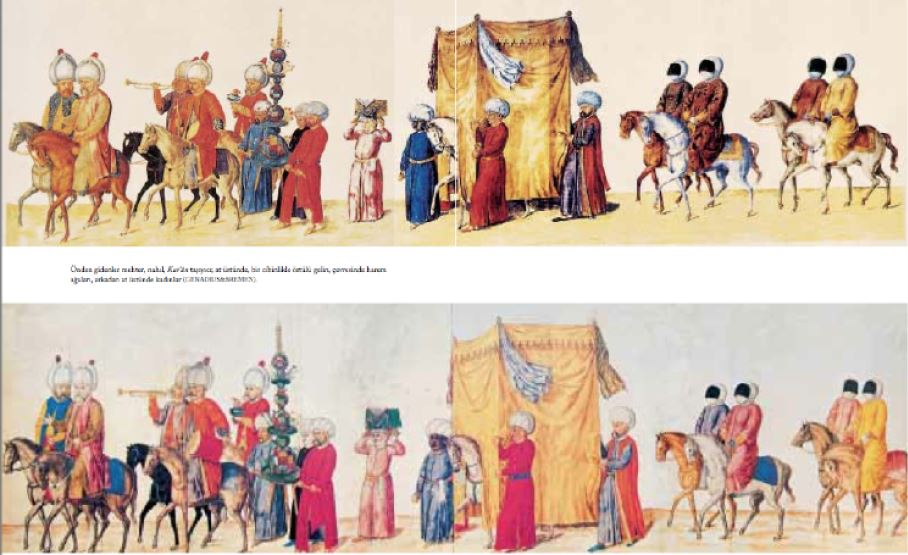
Bassano, yaygın inancın tersine Türklerin yedi değil, iki karıları olabileceğini belirtiyor. Ancak, kadın esirlere sahip evli bir adam bunlardan üç ya da dördünü kapatma tutabilirdi. Üstelik hemen hemen her Türk ’ün karısına ev işlerinde yardımcı olan bir câriyesi vardı. Evlenmeden önce, damat geline mehir denilen bir miktar para için söz verirdi. Gelin kâbin denilen bir miktar daha isterdi. Nikâh kıyan din görevlisi miktarları kaydederdi. Gelin kocasının kendisine verdiği evden memnun kalmazsa kocasını bırakıp bir başkasını arama hakkına sahipti. Evlilikte cinsel ilişki olmamışsa ya da kocanın sapık eğilimleri varsa, erkek çocuklarla ilişki kuruyorsa, isteği dışında karısını şarap içmeye zorluyorsa boşanma için tüm koşullar hazır demekti. Böyle durumlarda hatalı koca karısına, ona söz verdiği miktar parayı vermek zorundaydı. Öte yandan, kadın kısırsa koca karısını boşayabilirdi. Ancak mehr ’i vermek zorundaydı. Boşanmadan sonra, kadın da erkek de tekrar evlenebilirdi. Ancak koca yine boşandığı karısıyla evlenmeyi arzu ederse kadının bu arada başka bir erkekle evlenmiş olması gerekiyordu. İlk kocası kadına ikinci bir mehr vermeyi kabul etmeliydi. Bir Türk kadını Hıristiyan bir erkekle evlenemezdi, ama bir Türk erkeği Hıristiyan bir kadınla evlenebilirdi. Ancak onun kiliseye gitmesine izin vermek zorundaydı. Bassano, Müslüman kocalarının ölümünden sonra anneleriyle yaşayan Hıristiyan kadınlara rastlamıştı. Hıristiyanlar kendi aralarında evlenebilirler ama, Müslüman ya da Hıristiyan, câriye sahibi olamazlardı. Câriyeyle beraber olan bir Hıristiyan ’ı, kadı evlenmeye zorlardı. Bassano, Rumların Latinleri hiç sevmediklerini yazmış. Rumların, kızlarının Latinlerle evleneceklerine Türklerle evlenmesini yeğlediklerini söylüyor. Kimi Türkler oğlancıydı. Bunlar arasında paşalar, beylerbeyleri, amiraller, kadılar, imâmlar ve başkaca önemli kişiler vardı. Sultan da oğlanların arkadaşlığından hoşlanırdı ancak daha sonraları bu hastalıklı ilişkilere karşı çıkmıştı. Birçok Rum ve denizci de aynı günahı işliyordu [BASSANO 21b-22b].
Sultan sefere çıktığında emrindeki tüm Yeniçeriler, askerler ve subaylar sefer süresince evlerine dönemezdi. Bu süre kimi kez üç yıla varırdı. Karılarının kötü yola düştüğü de olurdu. Bunlar her gün hamama giderler, adı çıkmış meyhânelerde sık sık görünürler, şehvet düşkünüyseler geceyi dışarda geçirirlerdi. Bu tip fahişelerin sayısı kabarıktı. Fahişe oldukları anlaşıldığında yakalanıp cezalandırılırlardı. Ancak yüzleri peçeli olduğundan kendi kocaları bile onları güçlükle tanıyabilirdi. Dernschwam ’a göre İstanbul öylesine büyük bir ahlâkî çöküntü içindeydi ki Sodom ve Gomore ’ye taş çıkartırdı. Bunun nedeni de erkeklerin kadınlarını kilit altında tutmalarıydı.
Bir erkeğin iki ya da üç karısı varsa bunlar ev işlerine yardım ederdi ya da erkek bir ya da iki kadın esir alırdı ve hoşnut kaldığı sürece bunları evde tutardı. Bıktığındaysa satardı. İsterse bir esirle evlenebilirdi. Ancak evliyken bıkarsa satamaz, çeyizini de ödemek zorunda kalırdı. Bu zavallı kadın esirler, kaderlerinin değişmesine dua ederek susuzluk ve açlığa, uzun saatler boyunca çalışmaya ve acıya katlanmak zorundaydılar. Ateşli genç bir erkek üç kadın esir alabilirdi. Eğer evliyse esirlere kötü davranırdı. Parasını çarçur eder de meteliksiz kalırsa esirleri satardı. Şehvet düşkünü erkekler üç ya da dört kadınla evlenirdi. Ancak günlük geliri beş ya da altı akçeyi aşmayan bu aileler sefalet içinde yaşarlar, kapılarını kimseye açmazlardı [DERNSCHWAM 134].
Bir erkek bir kadını başka bir ülkeden kaçırabilir ya da esir pazarından satın alabilirdi. Sonra da onunla yatardı. Kadından hoşnut kalırsa, onunla evlenirdi. Ancak evlenirse kadının huzurunda ona çeyiz olarak belli tutarda bir para ödeyeceğine yemin ederdi. Bu tutar resmî nikâh kaydına da yazılırdı [DERNSCHWAM 133].
Evlilik törenleri câmide yapılmaz, hiçbir imâm çiftleri birleştirip kutsamazdı. Boşanma durumuna kadı karar verirdi. Geleneklere göre, boşanma hâlinde erkek, erkek çocuklarını, kadın da, kız çocuklarını alırdı.
Schweigger, çok kadınla evlenmenin olağan olmadığını, Türklerin Yahudilerle ve Hıristiyanlarla birlikte olmalarının sonucunda bir kadınla evlenmeyi yeğlediklerini, böylece erkeklerin evlerinde daha çok huzur sağlandığını, daha az sorumluluk aldığını yazıyor [SCHWEIGGER 211].
Gerlach ’a göre Rum kadınlar Türk erkekleriyle evlenebilirdi. Çiftin çocukları olduğunda oğlan çocukları sünnet olur, kız çocukları vaftiz edilirdi [GERLACH 153].
Eskiden Yeniçerilerin birden çok kadınla evlenmelerine izin verilmezdi. Ancak bu kural Sultan Süleyman ’ın zamanında değiştirildi. Dernschwam, gündeliği yalnızca altı, yedi ya da sekiz akçe olan bir Yeniçerinin iki kadını nasıl geçindirdiğine şaşmış [DERNSCHWAM 133].
Türklerin dinî yasalarına göre cinsel birleşmeden hemen sonra kadın yataktan kalkmalı ve tüm bedenini iyice yıkayıp temizlemeliydi. Bir gecede kaç kez olursa olsun her birleşmeden sonra yıkanmalıydı. Sonra ertesi sabah akrabaları ve esirleriyle hamama gitmeli ve tekrar yıkanmalıydı. Arada hamama gitmediğinde kocasıyla iki gece üst üste yatamazdı. Gebe olduğunu anlar anlamaz kocası onunla yatmazdı. Ancak istediği takdirde erkek esirlerle avunabilirdi. Ya da kâbin yaptırıp kendine geçici bir eş bulabilirdi. Kadının çocuğu olmadığı durumda, koca onu kısır olduğu için boşayabilirdi. Ancak önce bir hâkim ya da hekim suçun kocada olmadığını kesinliğe kavuşturmalıydı. Kadını boşamanın diğer nedenleri arasında zina ve davranış bozukluğu vardı. Rumlar ve Ermeniler için de bu üçü boşanma nedeniydi. Ancak Rumların ve Ermenilerin tersine Müslüman erkekler kadın da razı olursa aynı kadınla tekrar evlenebiliyorlardı [POSTEL 27].
Bazen erkeğin savaşa giderken silâh ve teçhizat almak için karısını ve çocuklarını sattığına rastlanırdı. Bu alçaklar için iki kadın bir oğlandan daha değerliydi. Ancak hiçbir erkek karısını dövmezdi. Ancak karı-koca birbirlerine bağırıp çağırırdı. Koca karısını dövdüğünde kadının kadıya gitmeye hakkı vardı. Erkek bu durumda para ya da 100 sopalık falaka cezasına çarptırılırdı. Ancak erkek karısını pencereden bakarken ya da içki içerken yakalarsa onu boşayabilirdi. Bu durumda kadının çeyiz parası ve evlenirken getirdiği her şey kocaya kalırdı [DERNSCHWAM 147].
Türkler arasında boşanmak için birçok neden gerekliydi. Ancak kadına göre erkeğin boşanmak istemesi daha kolaydı. Hata kadında olmadığı zaman çeyizini geri alabilirdi. Kadın kocasıyla yaşamaya tahammül edemiyorsa kocasının kendisine gerekli koşulları sağlayamadığı ya da doğal olmayan davranışlarda bulunduğu savıyla boşanmayı isteyebilirdi. Bir yargıcın karşısına çıkmak zorundaydı. Dava açmasının nedeni sorulduğunda, konuşmaz, ayakkabısının birini çıkarıp ters çevirirdi. Bu yoldan kocasından gördüğü muameleyi anlatmış olurdu [BUSBECQ 119].
Bir erkek savaşa gittiğinde, her şeyini bir at alabilmek ve birkaç ay yaşatabilmek için para sağlamak üzere satar ve karısını yalnız başına, güvencesiz ortada bırakırdı. Uzun yıllar boyunca geri dönmezse genelde kadın başkasıyla evlenirdi. Eski koca geri döndüğünde kadın kadıya gider ve kocalarından hangisini istediğini söylerdi. Kadı da kadının bu isteğine göre karar verirdi. İstenmeyen koca kendisinden olan çocuklarını alırdı [DERNSCHWAM 135].
Erkek karısıyla geçinemiyorsa, yalnızca üç kez “Seni boşuyorum, git!” demesi yeterliydi. Bunun üzerine kadın evini terk etmek ve üç gün geri dönmemek zorunda kalırdı. Bu üç gün içinde kadın cinsel ilişki kurmak zorunda olmadığı bir erkekle beraber olmalıydı. Bundan sonra, kocası istediğinde evine dönebilirdi. Her şey kocasına kalmıştı. Dernschwam bu geleneği kötü ve ahlâk dışı bulduğunu yazıyor [DERNSCHWAM 135].
Kadınlardan biri ötekiyle yaşamak istemediğini kadıya söylerse boşanma hakkına sahip olabilirdi. Bu durumda koca çeyiz parasını ödemek zorunda kalırdı. Ancak şikâyet eden koca olduğunda ya da kadın kocasının onurunu lekelemişse erkek kadını para ödemeden boşayabilirdi. Bu durumda çocuklar babalarının yanında kalırdı [DERNSCHWAM 133].
Pedro, Türk düğünleri konusunda da oldukça etraflı bilgi verir. Ancak, verdiği bilgilerin çoğu başka görgü tanıklarının anlattıklarına benzediğinden, burada anılarına kısaca değineceğiz. Örneğin, Pedro kına gecesinden söz eder. Kalabalık bir kadınlar grubu, düğünden birkaç gün önce davul zurna eşliğinde gelinin evine gider, damattan gelecek hediyeleri burada bekler. Ertesi gün de yine gelinin evine gelip gelini hamama götürür, hep birlikte yıkanır, yer içer, eğlenirler. Burada gelinin saçına, ayaklarına, kendi başparmaklarına ve bileklerine kına yakılır. Bir saat sonra yıkanıp çıkarılan kına ellerde ve bileklerde sarı lekeler bırakır. Kalabalık grup, yine gelinle birlikte, davul zurna eşliğinde, türküler söyleyerek gelinin evine dönerler. Ertesi gün damadın evinde, damadın ailesiyle başka yakınları toplanarak, atlarla gelini almaya giderler. Bu atlardan en güzeli, gelin için, başka birkaç at da gelinin eşyalarını getirmek için süslenir. Damat, gelinin evinin dışında bekleyenlere bahşiş vermeden buraya girilemez. Damadın en yakın dostu sağdıç olur. Damat geline en azından büyük bir tepsi sunmadan sağdıcı da içeri almazlar. Gelin böylece, yine davul zurna eşliğinde, damadın evine götürülür. Pedro, izlediği düğünde gelinin elbisesinin ve başının pembe bir ince tülle kapatıldığını söyler. Gelinle damadın ilk evlilik gecesinde damadın soyunmasına sağdıç, gelinin soyunmasına da başka kadınlar yardımcı olur. Damat, gelinin belindeki kuşağın düğümlerini çözmek için çeşitli armağanlar vermek zorundadır. Birlikte geçirilen bu ilk gecenin sabahı gelinle damat yine ayrı gruplarca hamama götürülürler. Düğünden sonra damadın bazı törenlere de katılması gerekir. Örneğin bunlardan birisi sağdıcın, uzun bir sopanın üzerine içi gümüş para dolu bir kese yerleştirmesi, sopayı devirmeyi başaran kişinin keseyi almasıdır. Ayrıca, düğünden sonra yapılan koşu, at yarışı gibi yarışmalarda damat para dağıtır [VIAJE 211-213].
Damat evlenme iznini veren kadıya evlenmek için başvururdu. Bu izinle, damat bir imâma giderdi. İmâm gelin olmaksızın evlenme törenini yerine getirir, nikâhı kıyardı. Tanık olarak törende bir imâm daha hazır bulunurdu. Bu imâm nikâhı yazılı olarak belirlerdi. Törenden sonra, damadın belirlediği bir günde düğün yapılırdı.
Düğünden önce damat geline armağanlar yollardı. Bunlar zurna ve davul çalanlar eşliğinde at ya da eşek sırtında taşınırdı. Ayrıca damat geline çeyizine ek olarak para da verirdi. Gelin ayrıca istediklerini satın alabilirdi. Düğün kutlamalarının son gününde bir grup kadın, yüzleri peçeli, at sırtında gelini yeni evine getirirdi. Düğünde kadın ve erkekler ayrı bölümlerde otururdu. Düğünde büyük kazanlar içinde pilâv ve koyun eti pişirilirdi. Alkolsüz, tatlı bir içecek olan şerbet içilirdi. Kadın ve erkeklerin ayrı ayrı kutladığı bu düğünlerde herkes çok eğlenirdi. Ancak Avrupa ’da âdet olduğu gibi kadınlarla erkekler birlikte dans etmezlerdi [DERNSCHWAM 133].
Erkeğin teklifi kabul edildiğinde düğün günü saptanırdı. Düğünde iki tarafın da aileleri damadın evinde bir araya gelirdi. Erkekler düğüne at üzerinde, kadınlar kapalı arabalarla gelirlerdi. Hem erkekler hem de kadınlar pırıl pırıl, altın sırmalı muhteşem giysiler giyerlerdi. Tüm konuklar geldiğinde damadın ailesi gelinin evine gelinin giysilerini, mobilyalarını ve diğer eşyalarını getirtmek için yirmi, otuz, hattâ kırk merkep gönderirdi. Merkeplerin koşum takımları süslü olurdu. Boyunlarına ziller takılırdı. On merkep gelinin çeyizini taşımaya yetecekken, yirmi merkep sırf gösteriş için gönderilirdi. Bu arada damadın evindeki konuklara bir odada kadınlar, bir başkasında erkekler olmak üzere, çeşit çeşit şekerlemeler ikram edilirdi. Damadın bekârlık arkadaşları bunlardan, evinde bekleyen geline hediye götürürlerdi. Kimi zaman daha gösterişli olsun, hakikî şekerlerin miktarı çok görünsün diye mumdan şekerler de eklenirdi. Daha sonra, damat ve arkadaşları en iyi giysileri içinde atlarına binerler ve gelini almaya giderlerdi. Ağır bir peçe altındaki gelin, üstünde kırmızı bir tente olan bir atla getirilirdi. Daha sonra düğün şöleni başlardı. Esas yemek koyun etli pilâvdı. Bunun yanında fırında güvercin de olabilirdi. Tatlı olarak şekerlemeler, taze meyve verilirdi ve şerbet içilirdi. Şölenden sonra konuklar için, müzikli, danslı eğlenceler düzenlenirdi. Konuklar dansa katılmazdı. Çünkü dans etmek dinlerince iyi karşılanmıyordu ve kadınlarla erkeklerin birlikte dans etmeleri yasaktı. Tüm tören boyunca birbirleriyle asla bir araya gelmezlerdi. Gelin kadınlarla, damat erkeklerle otururdu.
Akşam geç vakit, konuklar izin isterler ve giderlerdi. Daha sonra damat iyi cins halı ve yastıklarla bezenmiş yatak odasına çekilirdi. Bu, kadınlara verilen bir işaretti. Kadınlar gelini çevreler, kahkaha ve şakalarla gelini kocasının yanına yollarlardı. Böylece ilk kez olarak genç çift baş başa kalırdı.
Schweigger ’e göre, bir Türk gelini kocasına bir armağan vermezdi. Gelinin giysilerini ve mücevherlerini kayınpederinin isteği üzerine damat yapardı. Boşandığında kadın, getirdiği her türlü değerli eşyayı ve mücevheri geri götürme hakkına sahipti. Ama erkek harcamalarının karşılığını isteyemezdi [SCHWEIGGER 206-211].
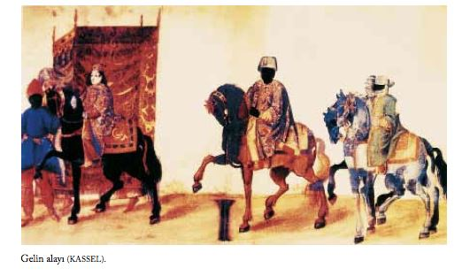
1576 Nisan ayında Gerlach damadın birinin geline yolladığı düğün armağanları alayına tanık oldu. Otuz, kırk atlının altın, gümüş yaldızlı yükleri taşıdıklarını görmüştü. Bunların arkasında ateş yutanlar, müzisyenler, sonra da ipek kumaşlara sarılı gümüş yemek takımları taşıyanlar vardı. Daha sonra en az elli tane şekerleme heykelcik taşınıyordu. Bunlar arasında altı-yedi fil, iki aslan, üç at, dört deniz yaratığı, birçok kuş çeşidi, bazı kaplar, testi ve şamdanlar vardı. En sonda da eşekler, ev eşyaları, halı ve şilteleri taşıyordu. Gelinin arkadaşlarına şekerlemelerden hediyeler vermesi âdetti [GERLACH 180].
Wratislaw ’ın anlattığı acıklı bir öykü Bassano ’nun gözlemlerini desteklemekte ve aynı zamanda evlilik âdetlerini ve törenlerini daha iyi açıklamakta. Bu öykü kısaca bir Rum delikanlısının güzel bir Rum kızına âşık olmasını ve iki gencin babalarının bu evliliği onaylaması üzerinedir. Ancak delikanlı uzaktayken, kızı sokakta Sultan’ın sarayından yüksek mevki sahibi bir adamla görür. Seksen yaşında olmasına karşın, kızın güzelliğiyle öylesine büyülenmiştir ki, bir Hıristiyan kızıyla evlenme izni alır ve kızın babasını kızı kendisine vermesi için zorlar. Öykü trajik sonla biter [WRATISLAW 205-223].
Düğün günü yapılanlar bir görkemin yansımasıydı. Önce, damat gelinin evine, kıza verdiği muhteşem çeyizi yeni evlerine taşımak üzere deve ve katır gönderdi. Daha sonra, damadın arkadaşlarından birinin evindeki erkeklere ve damadın evinde toplanmış kadınlara düğün kahvaltısı verildi.
Kahvaltıdan sonra, tüm konuklar gelini almak üzere yola çıktılar. Erkekler at üstünde, kadınlar kapalı arabalardaydılar. Gelini taşıyacak olan güzel, beyaz bir atı bir hizmetkâr götürüyordu. Atın yelesi altınlarla süslenmişti. Eyeri ve gemi birinci kalitedeydi. Dört adam (varsıl evlerde bu iş için ancak hadımlar görevlendirilirdi) pahalı işlemelerle süslü bir cibinlik taşıyordu. Renkli alayın başında borucular, davulcular ve başka müzisyenler vardı. Damat tüm konuklarla birlikte gelinin evine girdi. Şerbet ve şekerleme ikram edildikten sonra, gelinin babası kızının sağ elini damadın eline verdi. Kızına iyi bakmasını söyledi.
Alay yine yola çıktı. Yine, müzisyenler öndeydi. Daha sonra ellerinde altın yaldızlı, boyalı ve çiçeklerle süslü büyük mumlar taşıyan altı adam geliyordu. Bunların arkasında, bir hizmetkârın yularından tuttuğu beyaz atın üzerine binmiş, cibinlik içindeki peçeli gelin vardı. Hemen ardından yine at üzerinde yaşlı dadısı geliyordu. Dadının üstünde ne cibinlik vardı ne de atını tutan bir hizmetkâr. Damat ve her iki ailenin erkekleri kadınların yanlarında ve arkalarındaydılar. Sevinçlerini göstermek amacıyla atlarını şaha kaldırıp zıplatıyorlardı. Daha sonra, arabalar içinde kadın konuklar geliyordu; en sonda da, gelinin çeyizini pahalı halılarla örtülü kırmızı sandıkları taşıyan develer, katırlar.
Alay damadın evine vardığında, damat gelinin inmesine yardım etti ve onu eve götürdü. Daha sonra onu kadın konuklarla orada bırakarak erkek konuklarla eğlenmeye gitti. Dendiğine göre gelin Müslümanlığı kabul etmiş, başka eşleri olan kavas da ona çok rahat yaşayabileceği bir ev açmış [WRATISLAW 202-205].
Yalnızca sağdıçlar ve az sayıda insan gelin ile damada kiliseye kadar eşlik ederdi. Önce din adamlarına, Patriğe (18 akçeden az olmamak koşulu ile), râhibe (birkaç akçe) ya da başkasına (1 düka) para armağanları verilirdi. Ellerinde birer mum, gelin ile damat râhibin önünde diz çökerlerdi. Sağdıçları yanı başlarında dururdu. Dua okunduktan sonra çift el ele tutuşur, yüzüklerini değişir ve evlilik yemini ederlerdi. Daha sonra râhip her ikisinin üzerine bir örtü örterdi. Bu örtünün üzerinde altından, üzerinde Tanrı ’nın, İsa ’nın ve Kutsal Ruh ’un evlenen çift için rahmetini isteyen bir yazı bulunan bir taç yer alırdı. Bu arada, kilisenin dışındaki kalabalık dans edip içki içiyordu. Bir tanesi, daha sonra yeni evli çiftin evine asılacak olan küçük bir bayrak sallıyordu. Çift, kiliseden ayrılırken örtü üzerlerinde olurdu. İlk gece gelin ile damat birbirlerini görmezdi. Kentte, düğünler bir gün, kent dışındaysa iki ya da üç gün sürerdi. Bu tür törenlerin İtalyan ve İsviçre âdetlerinden etkilendiği söyleniyordu [GERLACH 151].
Canaye, Peralı zengin bir Rum tüccarıyla aynı yerden bir kızın düğününe davet edilmişti. Konukların hepsi aynı odada ağırlanıyordu ama kadınlar bir yanda, erkekler bir yandaydı. Gelin kadınların ortasındaydı ve üstü kapalı bir taht içindeydi. Başında bir taç vardı. Altın saçlı, açık tenli, çok hoş bir kızdı. Pırıl pırıl parlayan mücevherle süslü, koyu kırmızı bir giysi içindeydi. Kadınlar garip bir biçimde sustular. Etraflarına bakmadıkları gibi hiç konuşmuyorlardı, Fransızların tersine, Yunan arpı eşliğinde söylenen acıklı şarkıları dinliyorlardı. Şarkılar düğün havasından çok, cenaze müziğine benziyordu. Şarap ve şekerlemeler ikram edilmeye başlandığında damat gelinin yanına oturdu. Aniden üzerlerine kızıl bir örtü atıldı. Çift görünmez olmuştu. Bir ya da iki dakika sonra damat tahttan indi ve erkeklere katıldı. Sonra damadın babası gelinle dansı açtı. Ötekiler de arkadaşları veya akrabalarıyla dans etmeye başladılar. Gelinin annesi konukların armağanlarını büyük, gümüş bir kap içine toplamaya başladı [CANAYE 113-115].
Gerlach, bir Rum düğününe davet edilmişti. Evin holü çok sayıda kalın mumlarla aydınlatılmıştı ve üzerinde yiyecek ve şarap bardakları bulunan bir masa vardı. Erkekler bir odada toplanmışlardı. Herkes oturunca bir adam bir torbadan 100 crown çıkardı ve herkesin önünde saydı. Gelinin babası damada bu paranın yeterli olup olmadığını sordu, damat yeterli bulunca gelinin babası kızının giysileri için 40.000 akçe vermeye söz verdi. Daha sonra gelinin çeyizi sergilendi. Damat bir makbuz yazdı ve orada bulunanlar imzaladılar. Daha sonra herkes kadınlar kısmına geçti. Burada, gelin kenarı altın yaldızlarla süslü bir tente altında, üstünde halılar bulunan bir sıranın üzerinde oturuyordu [GERLACH 155-156].
Gerlach, bir Çingene düğününe tanık olmuş. Yüzü Türk âdetlerine göre peçeli olan gelin iki kadın tarafından taşınıyordu. Üç kadın da boyunlarına ve kollarına gümüş takılar takmışlardı [GERLACH 322].